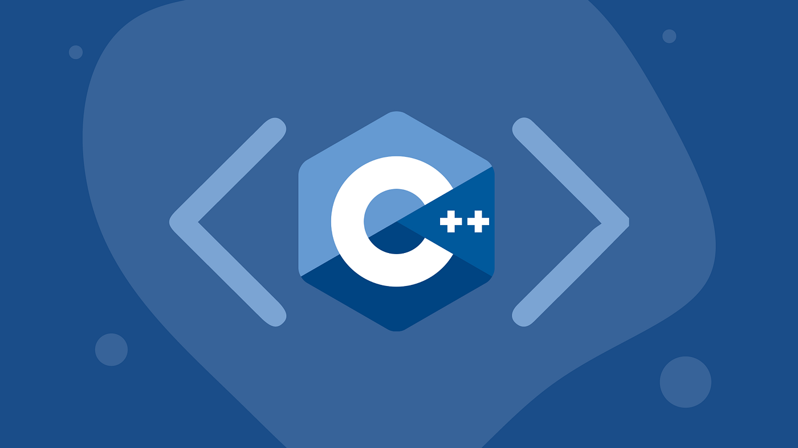

About C++
C++[b] is a high-level, general-purpose programming language created by Danish computer scientist Bjarne Stroustrup. First released in 1985 as an extension of the C programming language, adding object-oriented (OOP) features, it has since expanded significantly over time adding more OOP and other features; as of 1997/C++98 standardization, C++ has added functional features, in addition to facilities for low-level memory manipulation for systems like microcomputers or to make operating systems like Linux or Windows, and even later came features like generic programming (through the use of templates). C++ is usually implemented as a compiled language, and many vendors provide C++ compilers, including the Free Software Foundation, LLVM, Microsoft, Intel, Embarcadero, Oracle, and IBM.[14] C++ was designed with systems programming and embedded, resource-constrained software and large systems in mind, with performance, efficiency, and flexibility of use as its design highlights.[15] C++ has also been found useful in many other contexts, with key strengths being software infrastructure and resource-constrained applications,[15] including desktop applications, video games, servers (e.g., e-commerce, web search, or databases), and performance-critical applications (e.g., telephone switches or space probes).[16]